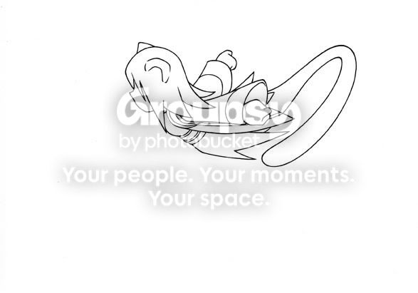

เก่งอ่ะ ... วาดได้สวยมากเลย ทำได้ไง ชอบมากเลยค่ะ 

วันนี้เอา background logo มาลงให้ดูแก้คิดถึงนะครับ กำลังวาดหน้า title อยู่ครับ ค่อนข้างยาก เพราะต้องวางองค์ประกอบให้ดี และต้องออกแบบโลโก้ใหม่ด้วย ที่เลือกเนโกะมาตะ เพราะสื่อได้ง่ายมากว่าเป็นเกมส์ ECO (วันนี้ไม่ค่อยสบาย ขอไม่เข้าเกมส์นะครับ -_-")
ตอบน้อง ~๐ShAdOw๐~ ค้าบ
วาดมาลงเลยค้าบ พี่อยากดูนะค้าบ เห็นแต่งานตัวเอง เบื่อจะแย่แล้ว อยากเห็นงานคนอื่นบ้างจังว่า วาดเก่งไปถึงไหนแล้วน้า?
ตอบน้อง Roph,Ariesnoah,มิเชล
พี่เป็นเลือดเก่านะครับ ไม่ได้ใช้คอมทำงานนะ งานรายละเอียดทุกอย่างจบในกระดาษครับ มีบ้างก็แค่สแกนเพื่อใส่ตัวอักษร แล้วก็เอามาลงให้ดูกันนี่ไง ไม่เชื่อมาดูต้นฉบับที่บ้านได้น้า (ลงที่อยู่ไว้แล้ว) ก็พอรู้มาบ้างว่ามีโปรแกรมประเภทช่วยวาดอยู่บ้าง แต่พี่ไม่ได้สนใจเลยไม่รู้น่ะครับ ลองถามพวกเลือดใหม่ดูนะครับ พวกเค้าจะร่างภาพแค่คร่าวๆด้วยดินสอ แล้วสแกนเข้าคอมเพื่อจบงานในนั้น อ่ะ อันนี้ทางใครทางมันน้า ไม่ว่ากันครับ ใครถนัดอะไรก็ลุยไปเลย ขอให้มีงานเป็นใช้ได้ ฮ่าๆ ^o^ มีคนวาดเยอะๆ มีโปรแกรมเมอร์เยอะๆ จะได้มีเกมส์คนไทยเยอะๆไงล่ะคร้าบ
ขอบคุณทุกคนนะครับที่แวะเข้ามาชม Thank you.